01_Bauteilname-Bauteilnummer_Konzern-BT-LAH-Vorlage_Basismodul-TE-V21_Mai[redacted-ext]
Si. Gurtführung hinten außen Si. Gurtführung vorne Säule B
Bauteil-Lastenheft
[redacted]: LAH
DUM.857.AE
Verteiler
|
| [redacted-person] |
| [redacted-person] |
Abt./OE, Kostenstelle, Name
|
Abt./OE, Kostenstelle, Name
|
Abstimmung
[I: BT-LAH[redacted-ext]]
Änderungsdokumentation
[I: BT-LAH-941]
Inhaltsverzeichnis
Vorwort 8
[redacted-person]
8
[redacted-person]
9
Kurzbeschreibung des
Entwicklungsumfanges 9
Zielsetzung 9
Zuordnung der Komponente
9
Zielfahrzeug(e) 9
Einsatzort und Zielmarkt
10
Variantenmanagement
10
Entwicklungs- und
Lieferumfang 10
Angebotsumfang 10
Entwicklungsablauf 12
Terminplan und
Meilensteine 12
Metriken zur
Projektverfolgung 13
Musterstände und
Musterstückzahlen 14
Typprüfung und
Zertifizierung 15
Qualität und
Zuverlässigkeit 16
Qualitätskonzepte 16
Risikomanagement (FMEA
und FTA) 17
Fachbereichs-
bzw. projektspezifische DMU-Richtlinien 17
Anforderungen
an Kenntnisse im Produktdaten-Management 17
Projektmanagement
und -organisation 18
Verantwortlichkeiten
im Projekt und Projektstrukturplan 18
Dokumentation 18
Mustermappe 18
Datenaustausch 19
Systemumgebung 20
[redacted-person]
20
[redacted-person]
20
Systemschaltbild 22
[redacted-person]
23
Benennung und Teilnummer
23
Block- und
Prinzipschaltbild 23
Funktionen 23
Funktionsbeschreibung
23
Fehlbedienung 24
Notbetrieb 24
Architektur 24
Steuergerätekonzept
24
[redacted-person]
24
[redacted-person] 25
Gurtführung hinten außen
25
Gurtführung vorne B-Säule
25
Sicherheitsanforderungen
25
Personen- und
Insassensicherheit 25
Fahrzeugsicherheit 25
Alternativen und
künftige Varianten 26
Gewichtsziele 26
Einbau 26
Einbauorte und Einbaulage
26
Montagekonzept 26
Geometrie 28
Toleranzen 28
Formgestaltung und Design
28
Ergonomie 29
Optik und Haptik 29
Akustik 29
Handling 29
[redacted-person] 29
Medienbeständigkeit
und chemische Anforderungen 30
Sauberkeitsanforderungen 30
Reinigung 30
Korrosionsschutz 30
Schutzklassen 30
Umweltverträglichkeit 30
Werkstoffauswahl 30
Recyclingkonzept 31
Ökobilanz 31
[redacted-person]
32
Last 32
Schwingungsverhalten
33
Steifigkeit und
Federeigenschaften 34
Verformung und Deformation
34
Druck 34
Lebensdauer 34
[redacted-person]
35
Beschreibung der
allgemeinen Anforderungen 35
[redacted-person]
35
Serviceanforderungen
35
Transportschutz 36
Logistikanforderungen
36
Qualitätssicherungsanforderungen
36
Anforderungen an Erprobung
39
Prüfmittel /
Erprobungsträger 39
Erfüllungsnachweise
39
Erprobungsplan 39
Prüfungen 39
Dauerversuch 40
Temperierverfahren
vor Festigkeitsversuchen 40
[redacted-person]
41
[redacted-person]
45
Anforderungen an alle geprüften Teile
48
Testparameter und Zyklen
49
Beschaffenheit des
zu testenden Musterstandes 49
Betriebszustände 49
[redacted-person] und Simulation
49
Fahrzeugerprobung 50
[redacted-person]
50
[redacted-person]
51
Definitionen,
Begriffe, Abkürzungen 52
Begriffe 52
Abkürzungen 53
[redacted-person]
56
Zeichnungen,
Pläne, Skizzen; Variantenbaum 56
[redacted-person]
56
Typprüfunterlagen,
Vorschriften, Gesetze 59
Querschnittslastenhefte
60
Zu beachtende
Schutzrechte und Lizenzen 60
[redacted-person]
61
Vorwort
[redacted-person]-Lastenheft beschreibt Anforderungen für die gesamte
Baugruppe der Gurt- führung vorn (Säule B), der Gurtführung hinten außen
sowie der Formulierung der Festig- keitsanforderungen. Zur vollständigen
Entwicklung sind zusätzliche Anforderungen verbind- lich:
[I: BT-LAH-4]
Das vorliegende Bauteil-Lastenheft (BT-LAH) ist angelehnt an die
Struktur des VDA- [redacted-person] 2 (www.vda-qmc.de) und beschreibt
komponentenspezifi- sche Anforderungen. Das VDA-Modul 1 wird durch die
[redacted-co]99000 abgebildet und beschreibt komponentenübergreifende allgemeine
Anforderungen zur Leistungsbringung im Rahmen der
Bauteilentwicklung.
[I: BT-LAH-13]
Die vom Auftragnehmer zu erfüllenden Anforderungen sind in der
Identifikationsnummer (z. B: [A: BT-LAH-1]) grundsätzlich durch ein "A"
gekennzeichnet. Textteile, die durch ein "I" gekennzeichnet sind, sind
Informationen zum besseren Verständnis des BT-LAH. Gibt es keine
Identifikationsnummer oder keine Kennzeichnung mit "A" bzw. "I", so
handelt es sich ebenfalls um eine Anforderung.
[redacted-person]
[A: BT-LAH-5]
Das vorliegende Bauteil-Lastenheft und die Norm [redacted-co]99000 ff.
sind zusammen Grund- lage des zu erbringenden Leistungsumfanges des
Auftragnehmers.
[A: BT-LAH-6]
Dieses BT-LAH beschreibt Leistungen, Anforderungen, Prüf- und
Erprobungsbedingungen, die das zu entwickelnde Produkt und der
Auftragnehmer erfüllen müssen.
[redacted-person]
Kurzbeschreibung des
Entwicklungsumfanges
Vor dem Hintergrund neuer Fahrzeugprojekte, sollen neue Gurtführungen
entwickelt werden, welche hinsichtlich Sicherheit, Festigkeit,
Bedienbarkeit, Erreichbarkeit, Komfort, Korrosi- onsschutz, Gewicht,
Geräusche, Abmessungen und Anmutung den Anforderungen entspre- chen.
Zielsetzung
Das vorliegende LAH dient zur Festlegung der technischen Daten und
Randbedingungen für den Leistungsumfang.
Im Rahmen der Entwicklung sind folgende Punkte zu
berücksichtigen:
Kosten- und termingerecht entwickeln
werkzeuglose Montagekonzepte
Variantenreduzierung
Qualitätsverbesserung
Preiskonstanz
neue gesetzliche Vorgaben
Recyclingkonzepte
FMEA
[redacted-person] entsprechen den Preisen zum SOP inklusive der
erforderlichen Optimierungen, Anpassungen und den notwendigen
Serienüberwachungsprozess.
Ein entsprechendes Pflichtenheft ist durch den Auftragnehmer zu
formulieren und unter an- derem mit dem Angebot beim Auftraggeber
einzureichen (siehe auch Kapitel 2.5 Angebots- umfang).
Zuordnung der Komponente
Zielfahrzeug(e)
Bezeichnung des Zielfahrzeuges: siehe Lieferumfangslastenheft
[A: BT-LAH-21]
Entwicklungsauftragsnummer: siehe Lieferumfangslastenheft
[A: BT-LAH-22]
Einsatzort und Zielmarkt
Zielmarkt: siehe Lieferumfangslastenheft
[A: BT-LAH-25]
Die relevanten Gesetzesanforderungen der Zielmärkte sind zu
erfüllen.
Variantenmanagement
[A: BT-LAH-26]
Target: siehe Lieferumfangslastenheft
Entwicklungs- und
Lieferumfang
[A: BT-LAH-916]
[A: BT-LAH-31]
Es gelten die Anforderungen des Kapitels "Entwicklungs- und
Lieferumfang" der [redacted-co]99000.
[A: BT-LAH-714]
[redacted-person] verpflichtet sich bei der Integration des Bauteiles
beim Auftraggeber mit- zuwirken.
[I: BT-LAH[redacted-ext]]
Im Rahmen der Forward-[redacted-person] wird über das
Neuteilinformationsblatt die KV- Quote vorgegeben, welche im Rahmen der
Vergabeverhandlungen vereinbart wird.
(Gilt nicht für [redacted-co].)
Für [redacted-co] gilt:
[A: BT-LAH-936]
Es gelten die Anforderungen der Konzeptverantwortungsvereinbarung.
Für das Bauteil gilt folgende Konzept-Verantwortungs-Quote für den
Lieferanten der Gurtführung: 30%
Angebotsumfang
[A: BT-LAH-33]
[redacted-person] verpflichtet sich, alle Anforderungen dem Angebot
als vereinbarte Be- schaffenheit zugrunde zu legen. Abweichungen vom
BT-LAH sind dem Angebot beizufügen und zu dokumentieren.
[I: BT-LAH-837]
[redacted-person] eines Auftragnehmers muss dieser nach den konzernweit
abgestimmten Bewertungskriterien des Auftraggebers (bauteilbezogene
Beurteilung von Entwicklungspart- nern) auditiert und zugelassen
sein.
[A: BT-LAH-34]
Mit dem Angebot sind vom Auftragnehmer folgende Unterlagen den
technischen oder zu- ständigen Fachabteilungen des Auftraggebers zur
Prüfung vorzulegen:
[A: BT-LAH-35]
[A: BT-LAH-36]
[A: BT-LAH[redacted-ext]]
[A: BT-LAH[redacted-ext]]
[A: BT-LAH[redacted-ext]]
[A: BT-LAH[redacted-ext]]
[A: BT-LAH-38]
[redacted-person], die auch Engpässe bei anderen
Aufträgen des Auftragnehmers berücksichtigt
Projektstrukturplan gemäß [redacted-co]99000
Projektterminplan gemäß [redacted-co]99000
Montage- und Befestigungskonzept
Angaben zu Eigen- und Fremdanteil (Entwicklung,
Produktion)
Erprobungsplan/Testmanagement
[A: BT-LAH-41]
[A: BT-LAH-42]
[A: BT-LAH-43]
[A: BT-LAH-44]
[A: BT-LAH-45]
[A: BT-LAH-46]
Werkstoffkonzept aller Einzelbauteile (nur Werkstoffe, keine
Reinstoffangaben er- forderlich)
QM-Plan
Verwertungskonzepte nach [redacted-co]91102, Beiblatt 3
[redacted-person] durchzuführende Simulationen
FMEA-Prozess
[A: BT-LAH-47]
[A: BT-LAH-48]
[A: BT-LAH-49]
[A: BT-LAH[redacted-ext]]
Es ist der Nachweis zu erbringen, dass das in Kapitel "2.9
Anforderungen an Kenntnisse im Produktdaten-Management" geforderte
Anforderungsprofil bereits erfüllt ist oder zum Zeit- punkt der
Beauftragung erfüllt sein wird, z. [redacted-person] entsprechende
Qualifizierungsnachwei- se.
Entwicklungsablauf
Terminplan und Meilensteine
Zwischen dem Entwickler der Sicherheitsgurtanordnung und dem
Lieferanten der Gurtfüh- rung finden in regelmäßigen [redacted-person] und Technikrunden statt. [redacted-person] der
Gurtführung verpflichtet sich, den Entwicklungsprozess hinsichtlich
ferti- gungstechnischer Belange zu unterstützen.
[I: BT-LAH-59]
Der aktuelle Terminplan wird von der Beschaffung des Auftraggebers
den Anfrageunterlagen beigefügt.
[A: BT-LAH-60]
Folgende vom Auftraggeber vorgegebenen Termine sind vom Auftragnehmer
nach [redacted-co]99000 im Projektterminplan zu berücksichtigen.
siehe Lieferumfangslastenheft
KW x : Verfügbarkeit A-Muster
KW x : 3D-CAD-Datensatz
KW x : [redacted-person]
KW x : DDKM ([redacted-person]-Kontroll-Modell)
KW x : Verfügbarkeit B-Muster
KW x : Verfügbarkeit C-Muster
KW x : Erstmuster
KW x : Erstmuster-Prüfbericht
KW x : Typprüfungsunterlagen (z. [redacted-person]'s,
CCC,...)
KW x : Baumustergenehmigung
KW x : P-Freigabetermin
KW x : B-Freigabetermin
KW x : 2-Tagesproduktion
KW x : SOP
[A: BT-LAH-62]
[A: BT-LAH-63]
[A: BT-LAH-917]
[A: BT-LAH-918]
[A: BT-LAH-64]
[A: BT-LAH-65]
[A: BT-LAH-66]
[A: BT-LAH-67]
[A: BT-LAH[redacted-ext]]
[A: BT-LAH-68]
[A: BT-LAH-919]
[A: BT-LAH-920]
[A: BT-LAH-69]
[A: BT-LAH-70]
[A: BT-LAH[redacted-ext]]
Für allgemein bauartgenehmigungspflichtige Bauteile (ABG’s) sind vom
Auftragnehmer Ge- nehmigungsdokumente incl. Testreport (z. [redacted-person] ECE,
CCC, Taiwan) an den jeweiligen bau- teileverantwortlichen Konstrukteur
zu liefern, der es an die Typprüfabteilung der Marke (sie- he auch [redacted-co]01155) weiterleitet.
[A: BT-LAH[redacted-ext]]
[A: BT-LAH[redacted-ext]]
[A: BT-LAH[redacted-ext]]
[A: BT-LAH[redacted-ext]]
[A: BT-LAH[redacted-ext]]
[A: BT-LAH[redacted-ext]]
Metriken zur
Projektverfolgung
[A: BT-LAH[redacted-ext]]
[A: BT-LAH-73]
[redacted-person] liefert im Rahmen der Fortschrittsberichte die
erforderlichen Daten für folgende Metriken:
[A: BT-LAH-74]
[A: BT-LAH-75]
[A: BT-LAH-76]
[A: BT-LAH-77]
Weitere projektspezifische technische Metriken, die kritische Aspekte
messen, werden zwi- schen den Projektverantwortlichen des Auftragnehmers
und des Auftraggebers abgestimmt.
Musterstände und
Musterstückzahlen
[A: BT-LAH-83]
[A: BT-LAH[redacted-ext]]
x - Teile für Gesamtintegrationstest (inklusive
der Teile für Verbauvorschrift, HILs, Referenzfahrzeug und weitere
Prüforte)
x - Teile für Einbauuntersuchungen
x - Teile für Kundendienstlösungen
[A: BT-LAH-84]
[A: BT-LAH-85]
[A: BT-LAH-86]
[A: BT-LAH-87]
[A: BT-LAH-88]
x - Teile für Fahrzeugdauerlauf
x - Teile für Laboranalyse
x - Teile für Vorbau/Vorderwagen
x - Teile für Unterflurmodelle
[A: BT-LAH-89]
[A: BT-LAH-90]
[A: BT-LAH-922]
[A: BT-LAH-923]
[A: BT-LAH-93]
[redacted-person] von Mustern sind die Musterstände für ZSB bzw. Systeme,
Einzelteile, Kom- ponenten mit dem Auftraggeber abzustimmen.
[A: BT-LAH-94]
[redacted-person] muss mit dem aktuellen Stand (HW, SW, EEPROM,
Mechanik) gekenn- zeichnet werden.
[A: BT-LAH-838]
[redacted-person] von 3D-CAD-Daten (digitaler Prototyp) hat zu einem
definierten Zeitpunkt vor Lieferung der Musterteile zu erfolgen.
Für [redacted-co] gilt:
[A: BT-LAH-80]
Mindestens für alle geplanten Baustufen und Erprobungsfahrzeuge ist
jeweils ein [redacted-person]- terteile anzuliefern.
[I: BT-LAH-839]
[redacted-person] über Fahrzeug-Anzahl und Aufbautermin (virtuell und
physisch) sind unter Abschnitt "Terminplan und Meilensteine" festgelegt
bzw. dem Prototypenbauplan zu ent- nehmen.
[A: BT-LAH-924]
Zu berücksichtigen sind auch Musterteile für Vorbau/Vorderwagen und
Unterflurmodelle, falls packagerelevante Änderungen (laut [redacted-co]99000
Kapitel "Änderungsmanagement") an dort verbauten Bauteilen vorgenommen
werden.
[I: BT-LAH-925]
[redacted-person] können sein:
[A: BT-LAH-91]
Die genannte Anzahl an Teilen ist Bestandteil des
Entwicklungsumfanges und der Entwick- lungskosten. Musterteile sind dem
Auftraggeber frei Haus anzuliefern.
[A: BT-LAH[redacted-ext]]
Für die Bauteile ist eine Kennzeichnung mit einem RFID-Transponder
nach [redacted-co]01067 „Ein- satz von Auto-ID zur eindeutigen
Objektkennzeichnung“ gefordert.
[A: BT-LAH[redacted-ext]]
[redacted-person] übernimmt das Beschaffen, Beschreiben und Montieren
der Transpon- der, sowie die elektronische Bereitstellung des
geforderten Dokumentationsumfangs.
Typprüfung und
Zertifizierung
[A: BT-LAH[redacted-ext]]
Fahrzeugteile und [redacted-person] (z. [redacted-person], After-[redacted-person]), welche nach weltweiten Gesetzen, z. [redacted-person], EG, Inmetro
(Brasilien) und CCC ([redacted-person] Certification), eine
Bauartgenehmigung benötigen, sind unabhängig vom Einsatzort/Zielmarkt
und Fahr- zeugmodell zu zertifizieren und mit der entsprechenden
Identifizierung nach Gesetzesvorga- be zu kennzeichnen.
[A: BT-LAH[redacted-ext]]
[redacted-person] muss die Zertifikate vor Ablauf ihrer jeweiligen
Gültigkeit sowie bei Ge- setzesänderungen aktualisieren und rechtzeitig
unaufgefordert an den Auftraggeber liefern. Dies gilt über den gesamten
Produktlebenszyklus, der auch den Zeitraum der Versorgungs-
verpflichtung von [redacted-person] beinhaltet.
[redacted-person] ist typprüfpflichtig: Nein
[A: BT-LAH-98]
[A: BT-LAH-99]
Bei typprüfpflichtigen Bauteilen sind zum Erfüllungsnachweis der
gesetzlichen Anforderun- gen Prüfungen in Absprache mit der zuständigen
Typprüfabteilung des Auftraggebers ggf. in Anwesenheit des [redacted-person] bzw. der Behörde durchzuführen und zu dokumen- tieren.
[A: BT-LAH[redacted-ext]]
[redacted-person] ist selbstzertifizierungsrelevant:
Nein
[A: BT-LAH[redacted-ext]]
Für selbstzertifizierungsrelevante Teile muss eine gesetzeskonforme
Dokumentation der geforderten meist experimentellen Nachweise der
Gesetzeserfüllung durchgeführt werden.
Qualität und Zuverlässigkeit
[A: BT-LAH[redacted-ext]]
Es gelten die Anforderungen und Verfahren bezüglich Qualität der
Formel-Q-Reihe und der [redacted-co]99000.
Qualitätskonzepte
[A: BT-LAH-103]
[redacted-person] des Bauteils ist mit einer Design-Validierung am
B-Musterstand und ei- ner Produkt-Validierung am C-Musterstand
nachzuweisen.
Anzahl der Ausfälle:
0-km-Ausfälle: 0 ppm (Ziel) *)
[A: BT-LAH-104]
[A: BT-LAH-105]
[A: BT-LAH-108]
*) Maßnahmen zur Zielerreichung (Strategiepapier usw.) sind bei
Angebotsabgabe anzuge- ben.
[A: BT-LAH-109]
Hiervon kann im Rahmen einer separaten Qualitätsvereinbarung
(ppm-Zielvereinbarung) nur in Abstimmung mit der Produkttechnik der
Qualitätssicherung des Auftraggebers abgewi- chen werden.
[A: BT-LAH-110]
[redacted-person] in Auftragnehmerangeboten werden als gegenstandslos
betrachtet.
[A: BT-LAH-111]
[redacted-person] der Serienlieferung wird ein ppm-Programm (für den
0-km-Bereich) mit der Quali- tätssicherung vereinbart, das eine
fortlaufende Qualitätsverbesserung in der Serie sicher- stellt.
[A: BT-LAH-112]
Es ist über eine 2-Tages-Produktion gemäß den Regelungen der Formel
Q-Konkret die Sta- bilität der Qualität unter Serienbedingungen
nachzuweisen.
Für [redacted-co] gilt:
[A: BT-LAH-927]
Es gelten die Anforderungen des Qualitätslastenheftes [redacted-co]
(LAH [redacted-phone]).
[A: BT-LAH-928]
Für [redacted-co] gilt:
[redacted-person] und Planung muss vom Auftraggeber vorgegebene
Prüftechnologien und - Konzepte berücksichtigen.
Risikomanagement (FMEA und
FTA)
[redacted-person] FMEA: Entwickler der
[redacted-person] Fertigungs FMEA: Lieferant der
Gurtführung
Für das [redacted-person] ist sowohl eine Konstruktions FMEA sowie
eine Fertigungs FMEA anzufertigen und dem Auftraggeber zur B-Freigabe
vorzulegen. Regelmäßige Ar- beitsstände und deren Maßnahmen sind in den
Entwicklungsgesprächen und Technikrunden vom Lieferanten zu
präsentieren.
Fachbereichs-
bzw. projektspezifische DMU-Richtlinien
Für [redacted-co] gilt:
[A: BT-LAH-929]
[redacted-person] bezüglich CAD und DMU werden im
"TE- Infocenter" (https://engineering-portal.audi.web.vwg/)
geregelt.
Anforderungen
an Kenntnisse im Produktdaten-Management
[I: BT-LAH[redacted-ext]]
Zur prozesssicheren Einsteuerung von Entwicklungsergebnissen in die
Systeme des Auf- traggebers sind Grundkenntnisse über das
Produktdaten-Management ([redacted]) unerlässlich.
[A: BT-LAH[redacted-ext]]
[redacted-person] des LAH.[redacted-phone]AF „Anforderungsprofil für die
Beauftragung von tech- nischen Regeln zur Aufnahme im System MBT“ sind
zu erfüllen.
Projektmanagement und
-organisation
Verantwortlichkeiten
im Projekt und Projektstrukturplan
[A: BT-LAH-122]
[redacted-person] stellt ständige Applikationsingenieure nur für das
beschriebene Einzel- projekt im eigenen Hause, sowie Residentingenieure
am jeweiligen Entwicklungsstandort beim
Auftraggeber.
[A: BT-LAH-123]
Sowohl für die Applikations- als auch die Residentingenieure sind
durch den Auftragnehmer die notwendigen Mess- und Applikationssysteme zu
stellen.
[A: BT-LAH-124]
[redacted-person] sollen in Absprache mit dem Auftraggeber
an den Erprobungs- fahrten des Auftraggebers teilnehmen.
Dokumentation
[A: BT-LAH-126]
Die gesamte Dokumentation ist vom Auftragnehmer in deutscher Sprache
zu erstellen.
[A: BT-LAH-127]
Die jeweils aktuelle Dokumentation des Entwicklungsstandes ist nach
Vereinbarung dem Auftraggeber auszuhändigen.
[A: BT-LAH-930]
[redacted-person] ist dem Auftraggeber in folgendem Dateiformat
auszuhändigen:
Mustermappe
[A: BT-LAH-166]
Zu jeder Lieferung eines neuen Standes des Bauteiles (Hardware,
Software und Mechanik) muss den zuständigen Fachabteilungen des
Auftraggebers eine Mustermappe mit mindes- tens folgenden Inhalten
übergeben werden:
[A: BT-LAH-167]
[A: BT-LAH-870]
[A: BT-LAH-871]
[A: BT-LAH-872]
[A: BT-LAH-873]
[A: BT-LAH-878]
Mechanik-Stand (z. [redacted-person])
Projektleitername des Auftragnehmers
Unterlageninhaltsverzeichnis
Stand des Lastenheftes
Stand des Pflichtenheftes
Kurzbeschreibung bzw. Informationen mit folgenden Angaben:
alle Änderungen gegenüber vorherigem Stand
die Notwendigkeit der Änderung
die Auswirkungen der Änderung
Teilelebenslauf
Pflichtenheft
Mess- und Prüfberichte (inkl. Toleranzanalyse)
Simulationsergebnis
Prüfbericht über Werkstoffanforderungen
Herstellungsverfahren
[A: BT-LAH-879]
[A: BT-LAH-881]
[A: BT-LAH-882]
[A: BT-LAH-883]
[A: BT-LAH-168]
[A: BT-LAH-884]
[A: BT-LAH-885]
[A: BT-LAH-886]
[A: BT-LAH-171]
[A: BT-LAH-172]
[A: BT-LAH-174]
[A: BT-LAH-175]
[A: BT-LAH-176]
[A: BT-LAH-177]
[A: BT-LAH-178]
[redacted-person] der Mustermappe ist in Form einer ausgefüllten Checkliste
nachzuweisen.
[A: BT-LAH-179]
[redacted-person] sind innerhalb von 5 Arbeitstagen nach zu
reichen.
Datenaustausch
Für [redacted-co] gilt:
[A: BT-LAH-932]
Es gelten die Anforderungen der Querschnittslastenhefte "TE DMU" LAH
DUM 000 A und "TE CATIA V5" LAH DUM 000.
Systemumgebung
[redacted-person]
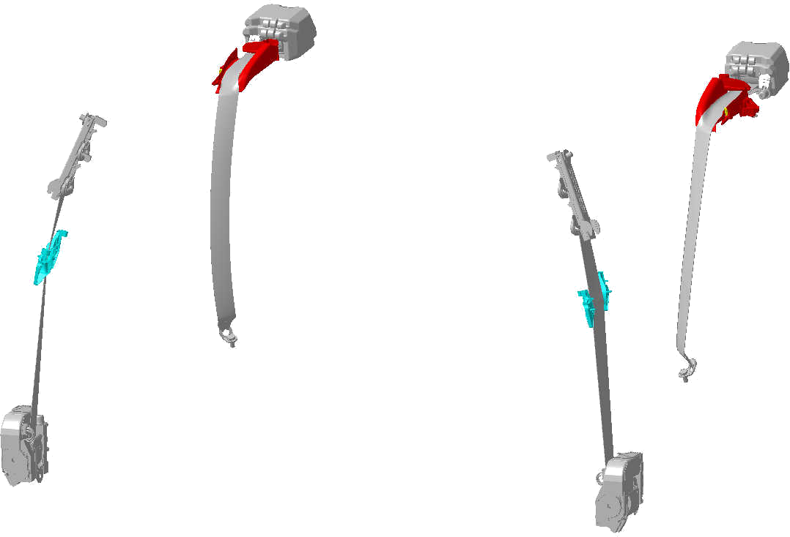
[redacted-person]
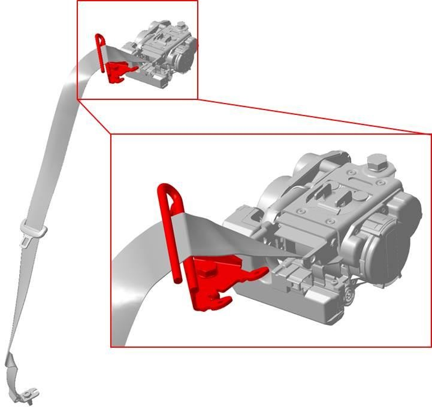
Gurtführung hinten außen (Metall)
Referenzdatensätze:
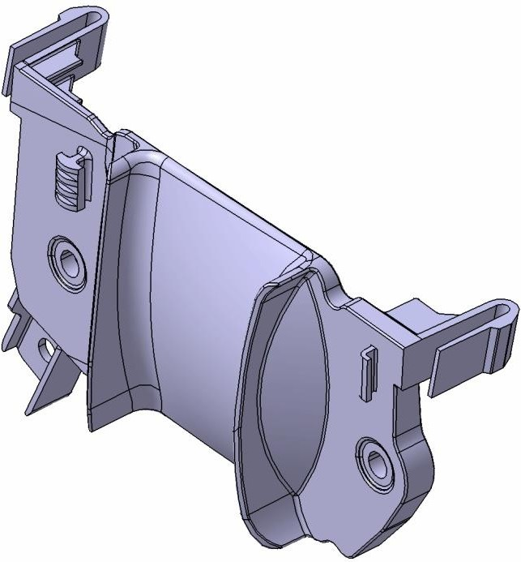
GuFü vorn (Kunststoff) 4G[redacted-phone]GuFü vorn (Metall)
8V[redacted-phone]B
GuFü vorn (Metall) 4N[redacted-phone]GuFü vorn (Metall) 80A.[redacted-phone]
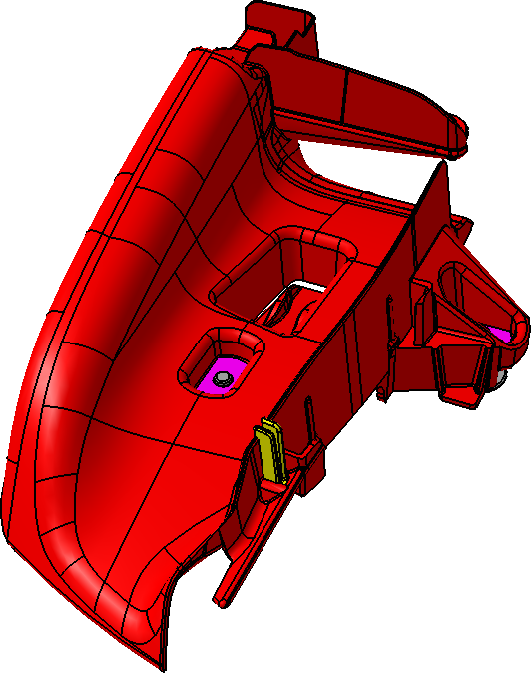
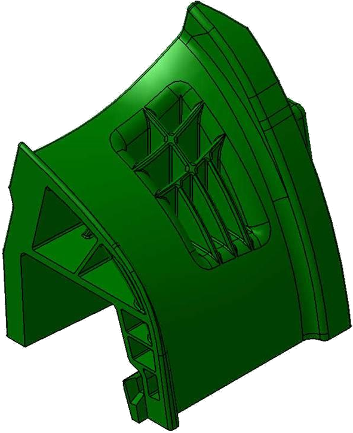
GuFü hinten außen (Kunststoff) 8K[redacted-phone]A GuFü hinten außen
(Kunststoff) 8X[redacted-phone]
GuFü hinten außen (Metall) 4N[redacted-phone]GuFü hinten außen (Metall)
4K[redacted-phone]A
Systemschaltbild
Kapitel für mechanische Baugruppen nicht belegt.
[I: BT-LAH-846]
[redacted-person]
Benennung und Teilnummer
Benennung: Gurtführung
Teilnummer:
[A: BT-LAH-192]
[A: BT-LAH-193]
Die projektspezifischen Teilenummern sind dem jeweiligen
Lieferumfangslastenheft zu ent- nehmen.
Block- und Prinzipschaltbild
Funktionen
Funktionsbeschreibung
Gurtführung hinten außen
Grundsätzlich ist die Position und Geometrie der Gurtführung hinten
außen so auszulegen, dass ein ausreichender Komfort und der notwendige
Insassenschutz für kleine Personen (5%-Perzentil) als auch für große
Personen (95%-Perzentil) sowie für Kinder (Q6 und Q10) gegeben ist. [redacted-person] soll dabei für alle Personen mittig über die Schulter
verlaufen.
Zusätzlich muss die Gurtführung so ausgelegt sein, dass eine
abgelegte Position des Gurt- bandes unproblematisch erfolgen kann.
[redacted-person]- und Rückzugsrichtungen aller genannten Perzentile sowie ein
Geradauszug beim Anschnallvorgang müssen ohne negative Beeinflussung
möglich sein.
Speziell für Gurführungen mit „Muldengeometrie“ (siehe
8K[redacted-phone]A in Kap. 4.2):
Bei kleinen Personen muss der Gurt bei Aus- und
Einzug des Bandes in die Führungsmul- de gleiten und dort verbleiben.
Dadurch wird der Schultergurt vom Hals des Insassen weg- geführt. Je
nach Größe des Insassen gleitet der Gurt mehr oder weniger tief in die
Mulde.
Bei großen Personen verläuft der Schultergurt
kreuzend über die Oberkante der Gurtfüh- rung zur Schulter.
Bei abgelegtem Gurt muss das Band in die
Führungsmulde gleiten und dort verbleiben.
Gurtband-Auszugsrichtungen: Es ist mit der Geometrie
der Gurtführung sicherzustellen, dass nachfolgende Auszugsrichtungen
ohne negative Beeinflussung möglich sind:
[redacted-person] in der B-Säule führt das Gurtband zwischen Retraktor
und Gurthöhenver- stellung / Gurtumlenkbeschlag.
[redacted-person] dient außerdem zum Ausgleich der Fallung in der
B-Säule.
Im Crashfall muss die Gurtführung den durch das Gurtband übertragenen
Kräften standhal- ten. [redacted-person] und ein Lösen der
B-Säulenverkleidung sind nicht zulässig.
Aus- und [redacted-person] (alle)
[redacted-person] muss aus allen möglichen Richtungen bei -40°C / -20°C /
+20°C / +80°C ohne fremde Hilfe vom Gurtretraktor aufgezogen werden. [redacted-person] des gesamten Gurtsys- tems muss die Gurtführung möglichst
reibungsarm ausgeführt sein.
Fehlbedienung
Notbetrieb
Architektur
Kapitel für mechanische Baugruppen nicht belegt.
Steuergerätekonzept
Kapitel für mechanische Baugruppen nicht belegt.
[redacted-person]
Kapitel für mechanische Baugruppen nicht belegt.
[I: BT-LAH-847]
[I: BT-LAH-848]
[I: BT-LAH-849]
[redacted-person]
Gurtführung hinten außen
Gurtführungen aus Kunststoff, wie 8K[redacted-phone]A (siehe Kap.
4.2):
Großkopfschrauben M5 Festigkeitsklasse 8.8, bei Hersteller
vormontiert
Anziehdrehmoment: max. 1,2 Nm bis 2 Nm (Abstimmung mit
Fachabteilung)
Schraube darf sich nicht selbst lösen, Sicherungsmittel
verwenden
Lösemoment: 2 Nm bis 5 Nm während der ersten 3
Umdrehungen
Scheiben einzeln oder einteilig mit Schraube
Rastelement zur Fixierung der Gurtführung in den
Schlüssellöchern
2 Filze und/oder partielle Gleitbeschichtung zur
Geräuschreduzierung, falls erforderlich werkzeuglose Montage, Verrastung
im Rohbau
[redacted-person], wie 4K[redacted-phone]A (siehe Kap.
4.2):
Doppelt verschraubte Metallgurtführung, wie 4N[redacted-phone](siehe
Kap. 4.2):
Gurtführung vorne B-Säule
[redacted-person], wie 4G[redacted-phone](siehe Kap.
4.2):
[redacted-person], wie 80A.[redacted-phone]oder
8V[redacted-phone]B (siehe Kap. 4.2):
[redacted-person], wie 4N[redacted-phone](siehe Kap.
4.2):
Sicherheitsanforderungen
Zuständigkeit: Lieferant der Gurtführung
[redacted-person] der Gurtführung muss gemäß TL 1010
nachgewiesen werden.
Personen- und
Insassensicherheit
Fahrzeugsicherheit
Alternativen und künftige
Varianten
Gewichtsziele
[redacted-person] ist gewichtsoptimiert zu entwickeln. Zielgewicht: <
x g
[A: BT-LAH-468]
[A: BT-LAH-469]
[redacted-person] ist bauraum-, werkstoff- und konzeptabhängig.
[redacted-person] zum Gewicht können vor P-Freigabe getroffen werden.
Einbau
Einbauorte und Einbaulage
Befestigungen und Einbauorte sind den im Lieferumfangslastenheft
definierten Teilenum- mern zu entnehmen, bzw. in Absprache mit der
Fachabteilung festzulegen.
[redacted-person] ist den PDM Blättern zu entnehmen.
Die äußere Form der Baugruppe und insbesondere die Lage und
Ausführung der Befesti- gungspunkte ist mit den zuständigen
Fachabteilungen des Auftraggebers, unter Zugrundele- gung des vom
Auftraggeber definierten Bauraumes, frühzeitig festzulegen.
Montagekonzept
[A: BT-LAH-475]
Teile sind grundsätzlich so zu konstruieren, dass ein Falscheinbau
(z. [redacted-person], sei- tenverkehrt, Fehlfunktion bei Falscheinbau)
nicht möglich ist.
[A: BT-LAH-476]
Teile, bei denen ein Falscheinbau verhindert werden muss, müssen
mechanisch codiert o- der mittels Diagnose im Fahrzeug überprüfbar
sein.
[A: BT-LAH[redacted-ext]]
Die geplante Reihenfolge und Ausrichtung der Teile beim Verbau sowie
der zu verwenden- den Vorrichtungen muss in allen 6 Freiheitsgraden
eindeutig beschrieben sein.
[redacted-person] sind so zu befestigen, dass ein Klappern an anderen
Bauteilen unter Berück- sichtigung aller Toleranzen nicht auftreten
kann.
[redacted-person] und deren Befestigungselemente, welche gesteckt
werden, sind so auszu- legen, dass diese leicht und ohne Verhaken in die
Schlüssellöcher oder Laschen der Karos- se eingeschoben und wieder
demontiert werden können. [redacted-person] müs- sen vollständig
einrasten.
[redacted-person] hinten außen auf Konsole:
gemäß Gurtführung AU481 (8K[redacted-phone]A, siehe Kap.
4.2)
Hierzu müssen die Kanten der Befestigungsschrauben gerundet sein,
damit diese nicht am Blech der Karosse schaben oder einhaken.
[redacted-person] müssen mit geringem Druck auf die Gurtführung in
die Schlüssellöcher einspuren.
[redacted-person] darf beim Ansetzen der Gurtführung diese nicht nach oben
drücken.
In der Endposition verrastet eine Rastnase der Gurtführung in einem
Rastfenster der Karos- se.
Einschubkraft der Gurtführung in die Verankerung in X-Richtung
(Fahrzeuglage) max.100 N Ausrückkraft der Rastnase in Z-Richtung
(Fahrzeuglage) max. 60 N Nach der Montage müssen die 2 Schrauben sicher
in den Schlüssellöchern sitzen.
Montagekräfte sind mit [redacted-person] im Einbauversuch abzustimmen.
gemäß Gurtführung AU210 (8X[redacted-phone], siehe Kap.
4.2)
[redacted-person] wird in Y-Richtung (Fahrzeugkoordinatensystem) auf
die Konsole gescho- ben und mit einer Schraube gesichert.
[redacted-person] M6 9 ± 0,5 Nm
gemäß Gurtführung AU58x (4K[redacted-phone]A, siehe Kap.
4.2)
[redacted-person] wird in Z-Richtung (Fahrzeugkoordinatensystem) auf
die Konsole aufge- setzt, sodass die Verdrehsicherung in der Konsole
einrastet und anschließend mit einer Schraube gesichert.
[redacted-person] 7/16 Zoll 40 Nm
gemäß Gurtführung AU651 (4N[redacted-phone], siehe Kap.
4.2)
[redacted-person] wird in Z-Richtung (Fahrzeugkoordinatensystem) auf
die Konsole aufgesetzt und anschließend mit zwei Schrauben
befestigt.
[redacted-person] M8 27 Nm
[redacted-person] vorne an Säule B:
gemäß Gurtführung AU573 (4G[redacted-phone]siehe Kap.
4.2)
[redacted-person] im Fahrzeug muss die Gurtführung vormontiert werden
können.
Vormontage über Haken, Zapfen, Rastnasen
Verschraubung nach der Vormontage
[redacted-person] M5 5 ± 0,5 Nm
gemäß Gurtführung AU370 (8V[redacted-phone]B oder 80A.[redacted-phone], siehe
Kap. 4.2)
[redacted-person] erfolgt durch das Einstecken der (Draht-) Gurtführung in
eine Lasche an der B- Säule. [redacted-person] muss frei von Grat sein um
das Einstecken der Gurtführung ge- mäß der angegebenen Einschubkraft zu
gewährleisten. [redacted-person] der Gurtführung er- folgt durch die
Formgebung und der Federwirkung der [redacted-person].
Einschubkraft der Gurtführung in die Lasche max. 100 N
gemäß Gurtführung AU651 (4N[redacted-phone], siehe
Kap.4.2)
[redacted-person] erfolgt durch Aufstecken der (Draht-) Gurtführung auf
zwei Befestigungsbolzen an der B-Säule.
[redacted-person] M6 6 Nm
Alle:
Die mehrmalige Montage und Demontage muss ohne Beschädigung der
Gurtführung und der angrenzenden Bauteilen möglich sein.
Anforderungen an die Montage / Demontage gemäß [redacted-co]99000, [redacted-co]99000-1,
[redacted-co]99000-4 [redacted-person] sind möglich.
Geometrie
[redacted-person] steht folgender Bauraum zur Verfügung:
[A: BT-LAH-479]
[A: BT-LAH-480]
[redacted-person] muss die äußere Geometrie der Baugruppe und
insbesondere die Lage und Ausführung der Befestigungspunkte (falls
vorhanden) mit den zuständigen Fachabtei- lungen des Auftraggebers,
unter Zugrundelegung des vom Auftraggeber definierten Bau- raumes,
abstimmen.
Toleranzen
Toleranzen zum Rohbau sind, wenn nicht fertigungstechnisch steuerbar,
durch elastisch deformierbare Elemente bzw. Langlöcher am Rohbau / an
der Gurtführung auszugleichen. Klappergeräusche sind zu unterbinden.
[A: BT-LAH-484]
Für alle Strakbauteile gilt: Die vom Auftraggeber gelieferten
Strakdaten sind verbindlich.
[A: BT-LAH[redacted-ext]]
Änderungen der Strakoberfläche sind ausschließlich über den
Strakprozess in Abstimmung mit dem Design des Auftraggebers
zulässig.
[redacted-person] im Sichtbereich müssen frei von Einfallstellen
sein.
Formtrennungen und Grate dürfen nicht im Sicht- und
Funktionsbereich des Gurtbandes liegen.
Formtrennungen, welche wegen des Fertigungsprozesses nicht
vermeidbar sind, dürfen nicht kantig und gratbehaftet sein.
[redacted-person] im Gurtgleitbereich müssen glatt und frei von
Unebenheiten (Kanten, Graten, Formtrennung, Schweißspritzer) sein,
welche das Gleitverhalten des Gurtban- des verschlechtern.
Bauteiloberflächen die nicht im Sichtbereich liegen und ohne
Funktion sind, dürfen in übli- cher Gussoberfläche ausgeführt
sein.
Ergonomie
Optik und Haptik
[A: BT-LAH-491]
Bauteile mit äußeren optischen Funktionselementen sind so auszulegen,
dass es im Betrieb auch unter extremen Bedingungen nicht zu einer
Funktionsbeeinträchtigung kommt.
[A: BT-LAH-492]
[redacted-person] ist nach Vorgabe des Auftraggebers auszuführen und
muss umlaufend gleichmäßig sein.
Akustik
[A: BT-LAH-498]
Geräusche dürfen im Fahrgastraum nicht oder nicht störend wahrnehmbar
sein. [redacted-person]- teilung erfolgt durch die Fachabteilung des
Auftraggebers im Fahrzeug mit den Innenge- räuschbedingungen.
Klapper-, Knarz- und Schabegeräusche zwischen der Gurtführung,
Rohbau, Sitzen, dem Gurtband und den Verkleidungsteilen sind im
Fahrbetrieb, bei Türen- oder Klappenzuschla- gen nicht zulässig.
Eventuell erforderliche Maßnahmen zur Geräuschminimierung sind vom
Lieferanten umzusetzen (siehe auch Lieferumfangslastenheft,
Zeichnungseinträge). Falls erforderlich, sind entsprechende Filze
und/oder Gleitfolien aufzukleben.
[redacted-person] sollte beim Ein- / Auszug möglichst flächig geführt
werden um Geräusche und zusätzliche Reibung zu vermeiden.
Handling
[redacted-person]
[A: BT-LAH[redacted-ext]]
[redacted-person], welche im Außenbereich oder an Stellen mit erhöhter
Umweltbelastung (z. [redacted-person] und Spritzwasser, Salznebel,
Tauchbereich) verbaut werden, ist die Verwen- dung von
Schmelzwerkstoffen (Hotmelts) nicht zulässig.
[A: BT-LAH[redacted-ext]]
[redacted-person] von Schmelzwerkstoffen zur Umspritzung von bestückten
Bauelementeträ- gern ist nicht zulässig.
[A: BT-LAH[redacted-ext]]
[redacted-person] von Schmelzwerkstoffen zur Abdichtung und zum Schutz
gegen Feuchtig- keit ist nicht zulässig.
[A: BT-LAH[redacted-ext]]
Abweichungen vom dargestellten Grundsatz bedürfen eines
Eignungsnachweises unter al- len relevanten
Fahrzeugeinsatzbedingungen.
Medienbeständigkeit
und chemische Anforderungen
[A: BT-LAH[redacted-ext]]
Bauteile, welche mit Kraftstoff oder Kraftstoffdämpfen/-kondensat in
Berührung kommen, müssen Ethanol sowie Methanol verträglich sein.
[redacted-person]:
Lieferant der Gurtführung
[redacted-person] müssen die [redacted]erfüllen. [redacted-person] muss
geruchsneutral sein.
Reinigung
Korrosionsschutz
Abzuprüfen für korrosive Gurtführungen, beispielsweise aus
Metall.
[A: BT-LAH-508]
Zuständigkeit: Lieferant der Gurtführung
Korrosionsprüfung nach TL471
Insbesondere sind folgende Punkte zu berücksichtigen:
Vermeidung von Kontaktkorrosion zwischen unterschiedlichen
Werkstoffen (Stahl, Edel- stahl, Alu, Mg, Elastomerteile etc.) durch
geeignete Beschichtungen
Vermeidung von Oberflächenkorrosion durch geeignete
Beschichtungen
lackiergerechte Gestaltung von Fahrzeugen und Bauteilen
[redacted-person] neuer Werkstoffe sind die grundlegenden Eigenschaften
wie z.[redacted-person] risskorrosion, Filiformkorrosion etc. zu
untersuchen.
Schutzklassen
Umweltverträglichkeit
Werkstoffauswahl
[redacted-person] mit Farbgebung erfolgt im fahrzeugbezogenen LAH,
im LAH Lieferum- fang, bzw. in der Anfragezeichnung.
Gurtführungen im Sichtbereich:
Gurtführung aus Kunststoff, Romiloy ASA/PA [redacted-phone]
Gurtführung aus Kunststoff, Altech PA6+ASA A [redacted-phone]UV
IM
Gurtführung aus Kunststoff, Bayblend T65, ABS/PC,
lackiert
Gurtführung aus Kunststoff, [redacted-person] GX70 PV1303, ABS/PC,
lackiert
Gurtführung aus Stahl, KTL-Beschichtung, TL260
[redacted-person] der Sicht- und Bandseite erfolgt gemäß TL 226, wenn im
fahrzeugbezoge- nen LAH gefordert. Wegen der Funktion des
Sicherheits-Gurtbandes dürfen keine bremsen- den Lacke verwendet werden.
Zulässig sind ausschließlich reibungsneutrale oder gleit-
verbessernde Lacke (KU Lack). Softlacke dürfen nicht angewendet
werden.
[redacted-person] 2K-PU-Hydrolack ( KU-Lack ) 1 schichtig 20 – 30
μm
TL 226 und AWR 3212 ( B1C1 )
[redacted-person], Lack R 5403
[redacted-person] erfolgt gemäß fahrzeugbezogenem LAH, wenn nicht
anders gefordert.
Grundausführung schwarz nach Farbkombination
weitere Farben nach Farbkombination
[redacted-person] muss in gleicher Farbe ausgeführt sein wie die
Lackoberfläche.
Werkstoffweiterentwicklungen bzw. -änderungen hinsichtlich
Festigkeits-, Kosten- und Ver- arbeitungsoptimierungen sind möglich.
Gurtführungen außerhalb des Sichtbereichs:
Stahl (S235JRC+C)
Gurtführung aus Kunststoff, Bayblend T65, ABS/PC
Gurtführung aus Kunststoff, [redacted-person] GX70 PV1303,
ABS/PC
Recyclingkonzept
Ökobilanz
[redacted-person]
Last
[redacted-person] wird beim Crash durch die Massenkräfte des Insassen
über das Gurtband belastet.
[redacted-person] muss alle Belastungen, welche durch die Benutzung, im
Fahrbetrieb und beim Unfall entstehen, ohne Schaden, ohne bleibende
Verformung, Bruch und ohne Funkti- onsausfall überstehen. Bei max. Crash
ist eine bleibende Verformung zulässig.
[redacted-person] darf sich durch die Benutzung, durch den Fahrbetrieb,
durch Belastungen sowie im Crash nicht aus der Verankerung lösen.
[redacted-person] muss bei Belastung flächig über die gesamte Bandbreite
an der Gurtführung aufliegen.
[redacted-person] der Gurtführung muss während der
Konstruktionsphase rechnerisch vom Entwickler der Gurtanordnung
nachgewiesen werden. (siehe Abs. 6.8)
[redacted-person] hinten ist
überwiegend
vertikal nach unten: daraus resultiert Druckbelastung auf die
Gurtführung
horizontal nach vorne: dadurch werden die Schrauben und deren
Anbindungen belas- tet
quer zur Fahrzeuglängsachse: Hieraus ergibt sich ein Moment um
eine vertikale Achse der Gurtführung, welche von den Schrauben und
Verdrehsicherungen über deren Ab- stand abgefangen wird.
Die L-förmig angeordneten Schenkel der Gurtführung gemäß
Gurtführung AU481 (8K[redacted-phone]A, siehe Kap. 4.2) werden durch die
Querkraft aufgeweitet, dadurch besteht Bruchgefahr am Knoten der
Schenkel.
Während des Straffvorganges wird die Führung kurzzeitig nach
hinten gezogen. Dadurch wird die Gurtführung in Gegenrichtung
belastet.
[redacted-person] vorne ist überwiegend
horizontal zum Fahrzeuginneren: Daraus resultiert eine Zug- und
Biegebelastung an der Gurtführung und deren Verankerung.
Während des Straffvorganges wird die Gurtführung kurzzeitig nach
unten gezogen. Dadurch wird die Verankerung ggf. eine Verrastung
belastet.
ggf. Belastung durch die Verankerung der [redacted-person] B
gemäß Gurtführung 4G[redacted-phone](siehe Kap. 4.2)
Kleinunfall (alle)
[redacted-person] („no fire crash“) bei denen die Sicherheitssysteme
(Airbag, pyrotechnischer Gurtstraffer) nicht auslösen,
Frontaufschlag:
Gurtkomponenten, Gurtführungen, Befestigungen, Befestigungsbasen
dürfen nicht beschä- digt und bleibend verformt werden, so dass kein
Wechsel dieser Teile erfolgen muss.
[redacted-person] gilt folgender Belastungswert:
Zuglast: ≥4,5 kN
Großunfall (alle)
[redacted-person] bis 56km/h Frontcrash, Seitencrash, Überschlag:
[redacted-person] darf ausreißen oder brechen. Eine bleibende Verformung
ist zulässig. [redacted-person] gilt folgender Belastungswert:
Zuglast: 9 – 12 kN
Kräfte beim Straffvorgang (alle)
Während des Straffvorganges entstehen umgekehrt gerichtete Gurtkräfte
in Richtung des Gurtaufrollers. [redacted-person] wird hierbei über eine
Länge von bis zu 150 mm unter Straffbe- lastung in [redacted-person] gezogen. Hierdurch darf kein Bauteil geöffnet werden, zer-
stört werden, oder aus der Verankerung reißen. [redacted-person] darf im
Straffvorgang durch die Gurtführung nicht beschädigt werden.
Belastungsfall Si Gurt abgelegt
Kräfte beim Kopfaufschlag
[redacted-person] beim Kopfaufschlag dürfen die Bauteile nicht brechen,
reißen oder splittern. Gurtführung hinten außen gemäß AU481
(8K[redacted-phone]A, siehe Kap. 4.2):
Schwingungsverhalten
In der Gurtführung dürfen keine Schwingungen entstehen, welche zu
einem Ermüdungs- bruch der Gurtführung und/oder deren Verankerung, sowie
zu Geräuschen oder Rissbildung führen.
Steifigkeit und
Federeigenschaften
Die elastischen und plastischen Deformationen sind so gering wie
möglich zu halten.
Druck
Lebensdauer
[redacted-person]- und Einzug des Gurtbandes sind die Gurtführung und das
Gurtband einer Scheuerbelastung unterworfen.
[redacted-person] muss diese Scheuerbelastung ohne sichtbaren
Schaden im Sichtbereich und ohne Funktionsbeeinträchtigung
überstehen.
[redacted-person] darf dadurch nicht beschädigt werden.
Durch ständige Benutzung und durch dynamische Einwirkungen im
Fahrbetrieb dürfen sich Funktion, Form und Festigkeit nicht nachteilig
verändern.
[redacted-person] des Bauteils muss über einen Zeitraum von mind. 15
Jahren sichergestellt sein.
[A: BT-LAH-933]
Bauteile müssen auf eine Lebensdauerforderung von 300000 km
Laufleistung statistisch ausgelegt sein.
[A: BT-LAH[redacted-ext]]
Bauteile mit definiertem Wechselintervall müssen auf km Laufleistung
/ Be- triebsstunden / Jahre ausgelegt sein.
[A: BT-LAH-935]
Bei der Umsetzung der Forderung ist darauf zu achten, dass zur
Einhaltung gesetzlicher Vorschriften für abgasbeeinflussende und
kraftstoffführende Bauteile eine Lebensdauer von 15 Jahren bzw. 150000
Meilen zu erfüllen ist.
[redacted-person] ist bis zur B-Freigabe zu erbringen.
[A: BT-LAH-542]
[redacted-person]
Beschreibung der
allgemeinen Anforderungen
[A: BT-LAH-983]
[redacted-person] mit Bordnetzschnittstellen, d. [redacted-person] Vorverkabelungen
und Adapterleitungen, Bauteile mit Anschlussleitungen, und Leitungen in
Komponenten, die als ZSB geliefert wer- den, gelten die Anforderungen
des Querschnittslastenheftes LAH 5Q0.971 „[redacted-person]-Anforderungen“.
[redacted-person]
Abzuprüfen für Gurtführungen mit geringen Schmelztemperaturen,
beispielsweise bei Kunst- stoff.
Zuständigkeit: Lieferant der Gurtführung
Formbeständigkeit und Funktion müssen über einen
Temperaturbereich von -40°C (Kälte- lagerung) bis +100°C (Wärmelagerung)
bei jeweils 48h erfüllt werden.
Lichtbeständigkeit nach PV 1303, 5 Zyklen am Einzelteil
(bei Sichtteilen)
3 Zyklen am Einzelteil (bei nicht Sichtteilen)
Anforderung: > Klasse 4 nach DIN EN 20105-A02 Veränderung der
Farbe nicht zulässig
Klimawechseltest nach PV 1200, 8 Zyklen am Einzelteil
Sonnenlichtsimulation nach DIN 75220 durch [redacted]
Bewitterungssimulation im Fahrzeug nach DIN 75220 durch
[redacted-co]
Freibewitterung nach [redacted-co]50185 durch [redacted]
TL1010 (Brennverhalten)
VW50180 (Emission)
VW50190 (Farbe/Glanz)
TL52231 (PC+ABS)
Anforderungen:
Serviceanforderungen
[A: BT-LAH-851]
Die minimale Lagerfähigkeit ist mit dem Auftraggeber zu
Angebotsvergabe gemeinsam zu definieren und zu dokumentieren.
[A: BT-LAH-853]
Nach der Lagerzeit müssen alle Anforderungen einschließlich
Lebensdauer erfüllt werden.
Transportschutz
Logistikanforderungen
Gurtführungen im Sichtbereich sind entsprechend vor
Oberflächenschäden (Kratzer, Abrieb- spuren, etc.) während des
Transports und während der Montage zu sichern.
Qualitätssicherungsanforderungen
[A: BT-LAH-634]
Es gelten die Vorgaben der [redacted-co]99000 und der Formel Q-Konkret (Kap.
"Produktsicherheit, Produkthaftung" und "Verpflichtung zur eigenen
Feldbeobachtung mit Meldepflicht") zur Ver- antwortung des Lieferanten
und dessen Unterlieferanten für eingebaute Kaufteile.
[redacted-person] behält sich das Recht einer stichprobenartigen
Qualitätsprüfung vor.
[A: BT-LAH-900]
[redacted-person] muss das Prüfkonzept für Schadensteile dem
Bauteilverantwortlichen vorstellen und mit ihm bis PVS abstimmen.
Metallgurtführungen:
Für die Sicherung gleichbleibender Qualität und Festigkeit der
Gurtführung verpflichtet sich der Lieferant zur Durchführung
serienbegleitender Bauteilprüfungen mittels statischen Gurt- zug gemäß
6.4.3.2.
Kunststoffgurtführungen:
Für die Sicherung gleichbleibender Qualität und Festigkeit der
Gurtführung verpflichtet sich der Lieferant zur Durchführung
serienbegleitender Bauteilprüfungen mittels Fallturm (siehe Skizze).
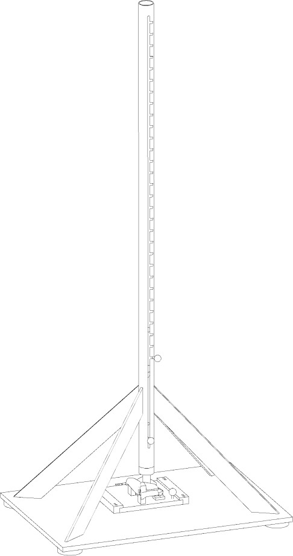
[redacted-person] der Gurtführung ist für die Bereitstellung des
Fallturms bzw. der Zugmaschine und der entsprechenden Aufnahme für die
zu prüfende Gurtführung zuständig. Dazu zählen die Konstruktion (3D, 2D)
und der Bau der Prüfvorrichtung. [redacted-person] sind auf Anfrage
des Auftraggebers diesem vorzulegen.
[redacted-person] der kritischen Fallhöhe und der Masse erfolgt mit
Teilen aus Serienwerkzeu- gen. [redacted-person] des Prüfdorns auf der
Gurtführung befindet sich in einem festig- keitskritischen Bereich.
Prüfzyklus zur Fertigungsfreigabe
Anforderungen:
alle 5 Teile je Nest müssen der Belastung ohne Bruch
standhalten
Splittern und Ausbrüche sind nicht zulässig
[redacted-person] der Anforderungen, erfolgt der Nachweis der
Funktionssicherheit durch die Erfüllung der Freigabeversuche nach diesem
Lastenheft.
Prüfzyklus jährlich
[redacted-person] zur Produkt- und Prozessüberwachung werden durch
den „COP-[redacted-person]“ definiert. Änderungen und projektbedingte
Anpassungen bleiben [redacted-co] vorbehalten.
Anforderungen an Erprobung
Prüfmittel / Erprobungsträger
[A: BT-LAH-694]
[redacted-person] spricht mit dem Auftraggeber ab, ob und wie viele
Fahrzeuge der Auf- tragnehmer mit Mess- und Applikationsgeräten
auszurüsten und für die Dauer der Entwick- lung (bis 3 Monate nach SOP)
bereitzustellen hat.
Erfüllungsnachweise
[A: BT-LAH-697]
Sämtliche unten aufgeführten Erprobungen sind nach den zitierten
Vorschriften durchzufüh- ren.
Erprobungsplan
Grundsätzlich ist das [redacted-person] vom Hersteller und vom
Entwickler zu erproben. Ausnahmen sind unter den vorstehenden LAH sowie
in der Folge gekennzeichnet:
[redacted-person] werden vom Hersteller der Gurtführung zur Verfügung
gestellt.
[redacted-person] mit Nachweis über die Erfüllung der Anforderungen
muss je Bauzustand / Farbe / Prozessänderung mit vorgegebener
Teileanzahl erfolgen (siehe Kap. 6.4).
[redacted-person] der Erprobung ist dem Auftraggeber schriftlich in
einem Prüfbericht vorzu- legen.
Abschlussbewertung mit Bezug auf Lastenheft i.[redacted-person]
n.i.O
Anlage mit Einzelergebnissen in der Versuchsreihenfolge
Dokumentation der Versuchsteile mit Bildern in der
Versuchsreihenfolge
Die ausgefüllte Prüfmatrix (Anhang 1) ist dem Auftraggeber
vorzulegen
Erprobungen am Gesamtfahrzeug werden bei der [redacted-co] bzw. beim
Entwickler der Gur- tanordnung durchgeführt.
Prüfungen
[redacted-person] erfolgt in der aufgeführten Reihenfolge.
Umfang der zu testenden Bauteile je Versuch (wenn nicht anders
angegeben):
mindestens 4 Teile je Farbe (Farbvarianz bei
Kunststoffgurtführungen im Sichtbe- reich)
Dauerversuch
Zuständigkeit: [redacted-co] / Entwickler der
Gurtanordnung
[redacted-person] des Versuchs ist die Verwendung von Teilen im
Neuzustand zulässig.
[redacted-person] werden mit einem Gurtaufroller auf einer
Vorrichtung gemäß [redacted-person] 2 (falls nicht vorhanden:
Blatt 1) wie im Fahrzeug befestigt.
Gurtband 700 mm ausziehen und aufrollen entspricht 1
Zyklus
Gurtbandlage quer zur Zugrichtung nach jedem Zyklus ca. 1 cm
verändern, oder Lageän- derung + Aus- Einzug innerhalb eines Zyklus mit
Kurbeltrieb durchführen (nur bei Gurt- führungen hinten
außen)
Aus- / Einzuggeschwindigkeit: 500 mm/sec
Anzahl der Zyklen: 70 000
Temperierverfahren
vor Festigkeitsversuchen
Abzuprüfen für Gurtführungen mit geringen Schmelztemperaturen,
beispielsweise bei Kunst- stoff.
Zuständigkeit: Entwickler der Gurtanordnung
Lagerung:
24 h bei + 100°C 24 h bei - 40°C
Klimawechseltest gemäß PV 1200:
Grenztemperaturen: + 80°C / - 40°C rel. Luftfeuchte: 80%
Anzahl der Zyklen: 8
Dauer 1 Zyklus: 12 Std.
[redacted-person] und der Klimawechseltest dürfen unmittelbar
hintereinander erfol- gen.
Trocknung:
Grenztemperatur: +100°C
rel. Luftfeuchte: gegen 0%
Dauer: bis messbarer Gewichtsverlust stagniert
[redacted-person] der Bauteile ist nur bei Kunststoffgurtführungen
vorzunehmen. [redacted-person] wird projektspezifisch ermittelt:
GuFü werden unmittelbar nach Trocknung gewogen (Teile noch im
warmen Zustand)
danach Abkühlung der GuFü innerhalb von 2 Stunden auf
Raumtemperatur bei 30% rel. Luftfeuchte
danach erneutes wiegen der GuFü und Ermittlung der
Sättigung
Ermittlung der Zeit, die zwischen Beendigung der Trockung und dem
Versuch liegen darf
Temperaturbereiche:
[redacted-person] sind in den Temperaturbereichen
-35°C (+5°C), 20°C (+5°C), 100°C (+5°C)
durchzuführen (Trocknung optional vor Festigkeitsprüfungen, in
Absprache mit der Fachab- teilung).
[redacted-person] der Versuchsteile vor den Festigkeitsversuchen
dauert mindestens 4 Stunden.
Nach der Entnahme der temperierten Gurtführungen aus dem Klimaschrank
muss der dy- namische/statische Festigkeitsversuch innerhalb von 60
Sekunden erfolgen.
Prüfaufbau und -durchführung müssen die vorgeschriebenen Temperaturen
zum Versuchs- zeitpunkt sicherstellen. [redacted-person] ist für jede
Kunststoffgurtführung versuchsbeglei- tend zu erfassen und zu
dokumentieren. Die exakte Position der Temperaturmessung ist mit dem
Auftraggeber abzustimmen.
Über repräsentative Bauteiltemperaturmessungen ist im Vorfeld ein
entsprechender Nach- weis zu erbringen.
Sind die geforderten Leistungen nachweislich nicht erfüllt, bessert
der Auftragnehmer zu seinen Lasten nach.
[redacted-person] Zuständigkeit: Lieferant der
Gurtführung
[redacted-person] statisch
In der Regel sind Rastnasen nur bei Kunststoffgurtführungen gemäß
8K[redacted-phone]A (siehe Kap. 4.2) verbaut und somit auch nur bei diesen
Bauteilen durchzuführen.
[redacted-person] werden ohne Gurtaufroller auf einer Vorrichtung gemäß
[redacted-person] 2 (falls nicht vorhanden: Blatt 1) wie
im Fahrzeug befestigt.
Gurtführung entgegen der Einschubrichtung gegen die Rastnase
belasten
Drückgeschwindigkeit: 100 mm/min
Drücklast: hinten ≥ 2 kN vorne ≥ 1,5 kN
Haltezeit der Last: ≥ 10 ms
Aufzeichnung der Kräfte über Zeit
[redacted-person] kann auch durch 6.4.4.3 [redacted-person] -
Sicherheitsgurt abgelegt
erbracht werden.
[redacted-person] statisch
***geprüft wird nur die rechte Gurtführung***
[redacted-person] werden ohne Gurtrolle auf einer Vorrichtung gemäß
[redacted-person] 2 (falls nicht vorhanden: Blatt
1) wie im Fahrzeug befestigt.
[redacted-person] wird über 2 Bolzen eingeschlauft.
Gurtband über die Gurtführung führen und belasten
Aufzeichnung der Kräfte über Zeit
[redacted-person] der Schrauben zum Verrasten der Gurtführung gemäß
Gurtführung AU481 (8K[redacted-phone]A, siehe Kap. 4.2) auf dem Prüfstand ist
zulässig, solange ein fester Sitz der GuFü gewährleistet ist.
Kraft-Zeit-Diagramm mit einer 10 [redacted-person]
(Prinzipdarstellung, für Kunststoffgurt- führungen):
 fahrzeugspezifisch
ge- mäß Gurtzugsimulation
fahrzeugspezifisch
ge- mäß Gurtzugsimulation
Gurtführung hinten außen
|
Gurtführung vorne
|
4 Versuche*
|
Abzug gem. Gurtzug**
|
[redacted-person] B
|
* mindestens 4 Teile je Farbe nach Temperaturtest (siehe 6.4.2)
(Farbvarianz bei Kunststoffgurtführungen im Sichtbereich)
** Die zuständige Fachabteilung behält sich statische
Festigkeitsprüfungen mit anderen Abzugswinkeln bei der Gurtführung
hinten außen vor. [redacted-person] werden
anordnungsabhängig ge- prüft.
Kleinunfall
Prozedur für Kunststoffteile und Metallteile:
Zuglast: ≥4,5 kN Bandlast in Fzg. Anordnung
(1,3 kN Richtwert für Direktlast quer zur Gurtführung vorne)
Zugrichtung: fahrzeugspezifischer Gurtbandabzug gemäß
Gurtzugsimulation ([redacted-person])
siehe [redacted-person] 2 (falls nicht vorhanden: Blatt
1)
Zuggeschwindigkeit: 100 mm/min Haltezeit: ≥1 sec
Anforderungen zusätzlich:
keine bleibende Verformung der Gurtführung und der Verankerung
(bei Kunststoffteilen)
plastische Verformungen zulässig, solange Funktion gegeben ist
(bei Gurtführungen aus Metall)
keine sonstigen Schäden an der Gurtführung und der
Verankerung
Großunfall
Prozedur für Kunststoffteile:
Zuglast: fahrzeugspezifische max. Schulterlast gemäß
Gurtzugsimulation ([redacted-person])
Zugrichtung: fahrzeugspezifischer Gurtbandabzug gemäß
Gurtzugsimulation ([redacted-person])
siehe [redacted-person] 2 (falls nicht vorhanden: Blatt
1)
Zuggeschwindigkeit: 100 mm/min
Haltezeit: ≥10 sec. (bei Kunststoffteilen)
Anforderungen zusätzlich:
Prozedur für Metallteile:
Zuglast: Zug bis zum Versagen
Zugrichtung: fahrzeugspezifischer Gurtbandabzug gemäß
Gurtzugsimulation ([redacted-person])
siehe [redacted-person] 2 (falls nicht vorhanden: Blatt
1)
Zuggeschwindigkeit: 100 mm/min
Anforderungen zusätzlich:
plastische Verformung ohne Riss- und Kantenbildung zulässig bis
zur fahrzeugspezifi- schen max. Schulterlast gemäß Gurtzugsimulation
([redacted-person])
Versagensgrenze > fahrzeugspezifische max. Schulterlast gemäß
Gurtzugsimulation ([redacted-person]) nach Konzernvorgabe (→ 20% Sicherheit
integriert)
[redacted-person] und Muttern
In der Regel sind Schrauben nur bei Kunststoffgurtführungen gemäß
8K[redacted-phone]A (siehe Kap. 4.2) verbaut bzw. im Lieferumfang der
Gurtführung und somit auch nur bei diesen Bau- teilen durchzuführen.
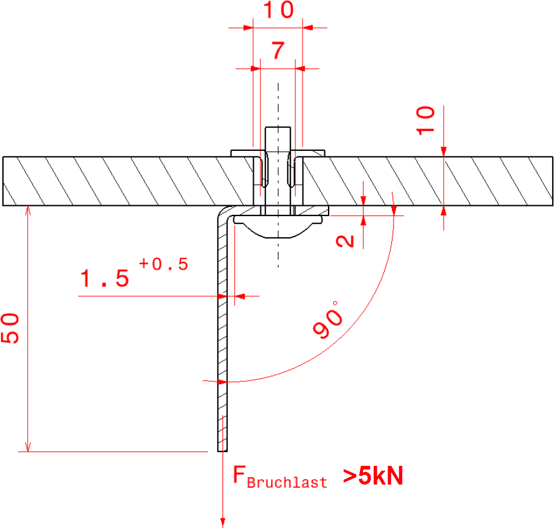
[redacted-person] muss nach jeder Neuanschaffung und bei jedem
Herstellerwechsel der Zukaufteile folgender Versuchsdurchlauf (siehe
Skizze oben) erfolgen:
Schraube und Mutter werden in einer Prüfvorrichtung bis zum Bruch
gezogen
Bruchlastanforderung: > 5kN
[redacted-person] entspricht dem der Gurtführung hinten
außen (siehe Bau- teilzeichnung).
[redacted-person] von mind. 4 Stück ist mit der dafür
zuständigen Fachabteilungen abzusprechen und kann bei Bedarf erweitert
werden.
[redacted-person] Zuständigkeit: Entwickler der
Gurtanordnung
[redacted-person] dynamisch
***geprüft wird nur die linke Gurtführung***
Prüfaufbau:
[redacted-person] werden mit einem Gurtaufroller auf einer
Vorrichtung gemäß Bauteilzeich- nung Blatt 2 (falls nicht
vorhanden: Blatt 1) wie im Fahrzeug befestigt.
Band über die Gurtführung führen und belasten
Zugrichtung siehe [redacted-person] 2 (falls nicht
vorhanden: Blatt 1)
Messung und Aufzeichnung der Kräfte über der Zeit
Videoaufzeichnung des Bauteilverhaltens während Test aus zwei
aussagekräftigen Posi- tionen
Synchronisation zwischen Kraft-Zeit-Messung und
Videoaufzeichnung
[redacted-person] der Schrauben zum Verrasten der Gurtführung gemäß
Gurtführung AU481 (8K[redacted-phone]A, siehe Kap. 4.2) auf dem Prüfstand ist
zulässig, solange ein fester Sitz der GuFü gewährleistet ist.
Belastungspuls
Die aufzubringenden Lastkurven (1. und 2. Sitzreihe) sind im
Vorfeld mittels Simulation zu ermitteln (Gurtkraft an der Schulter
B3).
Insassengröße: 95%
härtester anzunehmender Puls (z.[redacted-person],
Gurtretraktor mit Stopp, …)
Vorgehensweise (siehe Bild) zur Ermittlung der Grenzkurve:
Ermittlung des Maximums aus der Insassensimulation (blaue
Kurve)
Maximum aus der Insassensimulation + 10% in vertikale
Richtung
= 1.Punkt bzw. Maximum der Grenzkurve
Maximum aus der Insassensimulation – 10ms in horizontale
Richtung
= 2. Punkt der Grenzkurve
Maximum aus der Insassensimulation + 10ms in horizontale
Richtung
= 3. Punkt der Grenzkurve
Belastungsanstieg bis zu 3. (2. Punkt der Grenzkurve) innerhalb
30ms
[redacted-person] des Belastungspulses wird im Folgenden beispielhaft,
ausgehend von einer vorliegenden Insassensimulation beschrieben:
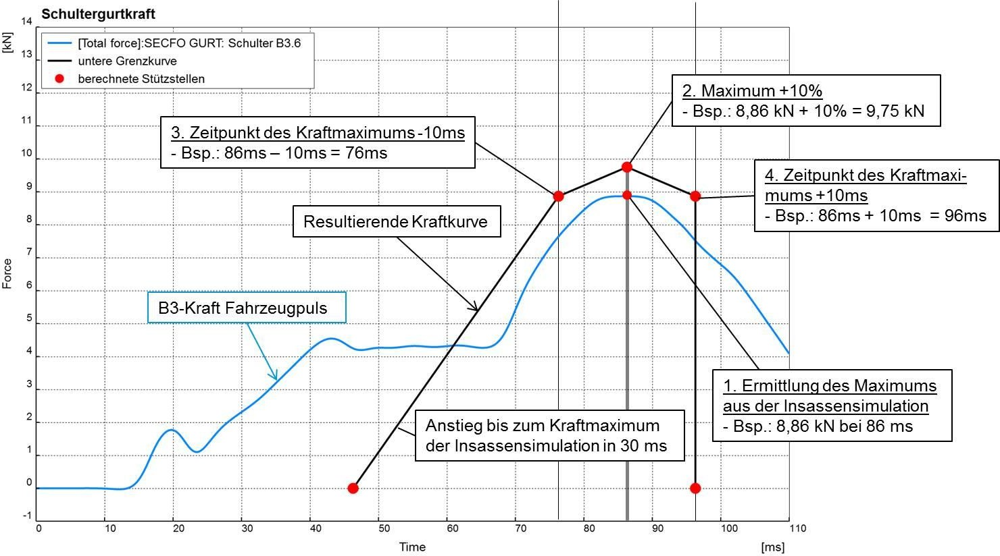
Gurtführung hinten außen
|
Gurtführung vorne
|
4 Versuche*
|
Zugrichtung 95 %**
|
[redacted-person] B
|
* mindestens 4 Teile je Farbe nach Temperaturtest (siehe 6.4.2)
(Farbvarianz bei Kunststoffgurtführungen im Sichtbereich)
** Die zuständige Fachabteilung behält sich statische
Festigkeitsprüfungen mit anderen Abzugswinkeln bei der Gurtführung
hinten außen vor. [redacted-person] werden
anordnungsabhängig ge- prüft.
Anforderungen zusätzlich:
[redacted-person] – Sicherheitsgurt
angelegt
Dieser Versuch ist nur erforderlich, falls
ein Nachweis über die vollständige Verrastung während der dynamischen
Belastungsversuche nicht erbracht werden konnte (nur bei Gurt- führungen
die lediglich über eine Verrastung am Rohbau befestigt, nicht aber noch
zusätz- lich verschraubt sind, beispielsweise gemäß Gurtführung AU481
(8K[redacted-phone]A, siehe Kap. 4.2).
Prüfaufbau:
[redacted-person] mit vollständiger Gurtstraffer-
Anordnung
Dummy 5%
Gurtband angelegt
Straffer wird im Stand gezündet
ohne folgende Belastung durch Insassen
Gurtführung hinten außen
|
Gurtführung vorne
|
2 Versuche
|
Zugrichtung 5 %
|
[redacted-person] B
|
[redacted-person] – Sicherheitsgurt
abgelegt
[redacted-person] soll die Festigkeit der Gurtführung hinten außen beim
Straffvorgang bei voll- ständig abgelegtem Gurtband
bestätigen (bei Gurtführungen mit großem Überstand zum
Rohbau, wodurch zusätzliche Momente auf die
Gurtumlenkung wirken).
Prüfaufbau:
[redacted-person], Konsole, Lehnenseitenteil
Gurtband in Richtung abgelegt verankern
projektspezifischen Gurtstraffer (Hochleistungsstraffer) im Stand
zünden
ohne folgende Belastung durch Insassen
Gurtführung hinten außen
|
1 Versuch
|
abgelegter Gurt
|
Anforderungen zusätzlich:
Anforderungen an alle geprüften [redacted-person]:
keine Beschädigung des Gurtbandes durch die Oberfläche der
Gurtführung
[redacted-person] erfolgt bei [redacted-co] oder Entwickler der
Anordnung
keine Beschädigung der [redacted-person] durch das
Gurtband
Temperaturtest:
keine Verformung des Bauteiles
keine Einfallstellen im Sichtbereich
keine Veränderung der Rastnase, Rastnase darf nicht nach
innerhalb des Bauteiles ver- zogen sein
kein Bruch der Verschraubung
Rastnase:
Vor, während und nach der Belastung muss die Gurtführung
vollständig in der Veranke- rung / Verrastung bleiben.
kein Knicken, Abscheren oder andere Zerstörung der Rastnase und
deren Befestigungs- basis
Gelingt der Nachweis über die vollständige Verrastung während des
Straffvorganges (Schlitten- und Craschversuche) nicht, so muss ein
Nachweis über Strafferstandversuche erbracht werden.
Festigkeit statisch / dynamisch:
kein Bruch, Rissbildung, Splittern an der Gurtführung und deren
Verankerung
keine sonstigen Schäden an der Gurtführung und deren
Verankerung
elastische und plastische Verformung ohne Riss- und Kantenbildung
zulässig
Gurtband darf während der Versuche die Gurtführung nicht
verlassen
[redacted-person] darf nicht beschädigt werden.
Testparameter und Zyklen
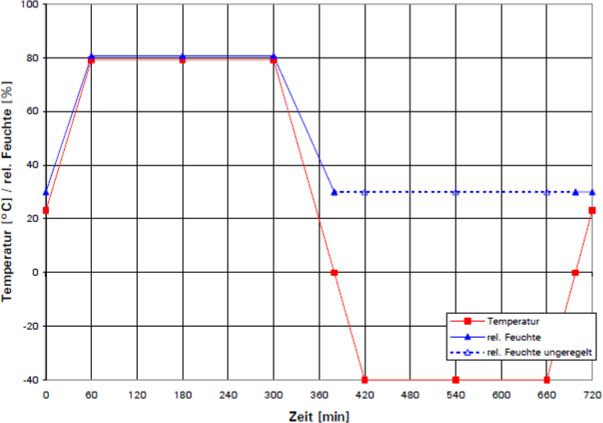
Temperatur-Zeit-Diagramm: Zyklus PV1200
Beschaffenheit
des zu testenden Musterstandes
Betriebszustände
[redacted-person] und [redacted-person]: Entwickler der
Gurtanordnung
[redacted-person] der Festigkeit der Gurtführungen (vorne und hinten
außen) erfolgt durch den Entwickler der Gurtanordnung.
Entwicklungsziel ist, den im Lastenheft / in der Prüfmatrix genannten
Prüfumfang (Festigkeit statisch / dynamisch) umfassend virtuell
abzubilden und bei Bedarf zur Verfügung zu stellen. Dabei sind
zusätzlich zur Gurtführung auch sämtliche an die Gurtführung grenzende
Kom- ponenten (Verkleidungsteile, Kofferraumabdeckung, Seitenpolster,
Rücksitzlehne) und die Anbindung an den Rohbau entsprechend in der
Simulation zu modellieren. [redacted-person] sind für jeden neuen Teilestand
bei [redacted-person] für die Rückhaltesystemaus- legung zur
Verfügung zu stellen, die den aktuellen Entwicklungsstand virtuell
abbilden.
[redacted-person] soll insbesondere folgende Ergebnisse abbilden:
[redacted-person] der Gurtführung erfolgt auf Anweisung des
Auftraggebers mit verschiedenen Werkstoffen.
Siehe [redacted]LAH.DUM.857.BB
[A: BT-LAH-698]
[redacted-person] und Simulationen sind die festgelegten Verfahren und
Systeme anzu- wenden. [redacted-person] erfolgt gemäß den Anforderungen
der [redacted-co]99000, Abschnitt "Produktdatenmanagement".
Fahrzeugerprobung
Erprobungen am Gesamtfahrzeug werden bei [redacted-co] bzw. beim Entwickler
der Gurtanordnung durchgeführt.
[redacted-person] der Gurtführung erfolgt beim Entwickler der
Gurtanordnung.
[A: BT-LAH-713]
[redacted-person] ist verpflichtet im jeweiligen Zielfahrzeug die
entsprechenden Untersu- chungen durchzuführen, um damit den Nachweis der
Funktionsfähigkeit des Produktes zu erbringen. [redacted-person] hierzu
sind dem Auftraggeber offen zu legen.
[A: BT-LAH-715]
Teile aus Fahrzeugdauerläufen sind auf Anforderung vom Auftragnehmer
zu analysieren.
[A: BT-LAH[redacted-ext]]
Wenn zur Durchführung von Versuchstätigkeiten das Bewegen von
Fahrzeugen des Auf- traggebers vorgeschrieben wird, dann stellt der
Auftraggeber die Fahrzeuge z. [redacted-person] Leihvertragsregelung zur
Verfügung. Fahrer von Erprobungsfahrzeugen benötigen neben der
erforderlichen Fahrlizenz ein vom Auftraggeber anerkanntes
Fahrsicherheitstraining.
[redacted-person]
[redacted-person] Zuständigkeit: [redacted]
[redacted-person] wird mit den anderen Gurtsystemkomponenten gemeinsam
in der Karosse-
rie auf Erfüllung der gesetzlichen Anforderungen geprüft.
Anforderungen:
ohne Bruch oder sonstiges Versagen, welches zur Beeinträchtigung
der Rückhaltefunkti- on des Gurtsystems führt
Nachgiebigkeit von Bauteilen mit darauffolgender Gurtlose ist
nicht zulässig
Einhaltung der Gesetzesanforderungen
[redacted]
[redacted-person] durch kleine Unfälle ([redacted-person]) dürfen die
Bauteile und deren Ver-
ankerungen sich nicht bleibend verformen, bzw. beschädigt werden.
Nach der Belastung muss die vollständige Funktion aller Bauteile
gewährleistet sein.
[redacted]
[redacted-person]
Abschließend zur Entwicklung des Gurtsystems erfolgt der TL 471
Schlittenversuch nach Kapitel „[redacted-person] mit 95%-Mann im
Fahrzeug“.
Funktionserprobung
[redacted-person] wird von [redacted-co], vom Entwickler der
Gurtanordnung, bzw. vom [redacted-person] durchgeführt. Im
Bedarfsfall, wenn Probleme mit der Gurtführung auftreten, wird der
Hersteller der Gurtführung hinzugezogen.
[redacted]
[redacted-person]
Zuständigkeit: [redacted-co]
Bei typprüfpflichtigen Bauteilen sind zum Erfüllungsnachweis der
gesetzlichen Anforderun- gen Prüfungen in Absprache mit der zuständigen
Typprüfabteilung des Auftraggebers ggf. in Anwesenheit des [redacted-person] bzw. der Behörde durchzuführen und zu dokumen- tieren (siehe
auch Kap. 2.6.4).
Definitionen, Begriffe,
Abkürzungen
Begriffe
2-Tages-Produktion
siehe Formel-Q-Konkret
A-Muster:
Darstellung der Grundfunktionen zur Abstimmung des
Bauteil-Lastenheftes:
Vervollständigung des Bauteil-Lastenheftes
Erprobung von alternativen Funktionen
[redacted-person] Ziele:
Konzept bestätigen und ergänzen
BT-LAH endgültig festschreiben
Baumustergenehmigung:
siehe [redacted-co]99000-4
B-Muster (Grundsatzmuster):
Umsetzung des Bauteil-Lastenheftes in seriennaher Form:
[I: BT-LAH-899]
[I: BT-LAH-719]
[I: BT-LAH-722]
[I: BT-LAH-723]
Zeichnungen, Schalt- und Bestückungsplan und Layout sowie
Softwarebeschrei- bung entsprechend vorliegendem Baustand
vorhanden
[redacted-person], Layout, Bestückung und Software in
seriennaher Ausfüh- rung (aus Hilfswerkzeugen)
Erfüllung sämtlicher Funktionsanforderungen
Beseitigung von Fehlern, Änderungen in begrenztem Umfang
möglich
Laborprüfungen sind vom Auftragnehmer durchzuführen
Ziele:
[redacted-person] durch Labor- und Fahrversuche
feststellen
Beauftragung der Werkzeuge für die Einzelteile durch die
Beschaffung
[I: BT-LAH-725]
C-Muster ([redacted-person]):
[redacted-person]- oder Serienfertigungsanlage hergestellte Teile:
[redacted-person] aus Serien-Fertigung
Serien-Software
[redacted-person] bezüglich Spezifikation
Dokumentationen (Zeichnungen, Schaltungsunterlagen, usw.) und
Prüfberichte liegen komplett vor
Ziele:
Entwicklungsdienstleister:
Entwickler der Gurtanordnung, zuständiges Ingenieurbüro für die
Konstruktion der Gurtfüh- rung (CAD, Simulation, Erprobungsumfänge)
Erprobung:
Gesamtumfang aller Tests und/oder Prüfungen
Erstmuster:
siehe Formel-Q-Konkret
Lieferant:
Hersteller / Produzent der Gurtführung
Abkürzungen
3D
Dreidimensional
ANO-LAH
Anordnungs-Lastenheft
ABG-Bauteile
Allgemein bauartgenehmigungspflichtige Bauteile
BT-LAH
Bauteil-Lastenheft
CAD
[redacted-person] Design
CCC
[redacted-person] Certification
DMU
[redacted-person]-Up
ECE
[redacted-person] for Europe
EDL
Entwicklungsdienstleister
EEPROM
[redacted]
EG
[redacted-person]
[I: BT-LAH-726]
[I: BT-LAH-898]
[I: BT-LAH-729]
[A: BT-LAH[redacted-ext]]
[I: BT-LAH-731]
[I: BT-LAH-732]
[I: BT-LAH[redacted-ext]]
[I: BT-LAH-734]
[I: BT-LAH[redacted-ext]]
[I: BT-LAH-735]
[I: BT-LAH[redacted-ext]]
[I: BT-LAH-738]
FMEA
Failure mode and effects analysis
FTA
[redacted-person] Analysis
GHV
Gurthöhenverstellung
GuFü
Gurtführung
HiL
Hardware in the Loop
HW
Hardware
KW
Kalenderwoche
MBT
[redacted-person]
ppm
Parts per Million
PDM
Produktdatenmanagement
PVS
Produktionsversuchsserie
QM
Qualitätsmanagement
RFID
Radio-[redacted-person]
SE
[redacted-person]
SOP
Start of Production
SW
Software
[I: BT-LAH-740]
[I: BT-LAH[redacted-ext]]
[I: BT-LAH-741]
[I: BT-LAH-746]
[A: BT-LAH[redacted-ext]]
[I: BT-LAH[redacted-ext]]
[I: BT-LAH[redacted-ext]]
[I: BT-LAH-751]
[I: BT-LAH-752]
[A: BT-LAH[redacted-ext]]
[I: BT-LAH-756]
[I: BT-LAH-758]
[I: BT-LAH-759]
[I: BT-LAH-760]
TL
[redacted-person]
VDA
Verband der Automobilindustrie e.V.
ZSB
Zusammenbau
[I: BT-LAH-762]
[I: BT-LAH-763]
[redacted-person]
[A: BT-LAH-766]
Es gelten die am Ausgabedatum des BT-LAH gültigen mitgeltenden
Unterlagen, sowie die darin genannten Dokumente.
[A: BT-LAH-767]
[redacted-person] stellt sicher, jeweils mit den für dieses BT-LAH
gültigen mitgeltenden Unterlagen zu arbeiten.
Bezugsquelle:
[I: BT-LAH-769]
Dokumente können über die B2B-Lieferantenplattform des [redacted-person] unter der Internetadresse: www.vwgroupsupply.com
mit einer Zugangsberechtigung abgerufen wer- den. (Kontakt auch über
[redacted]99 bzw. International: +49-5361- 933099
oder e-Mail: [redacted-email]
)
Zeichnungen, Pläne,
Skizzen; Variantenbaum
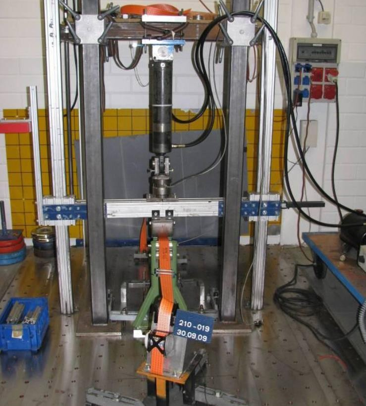
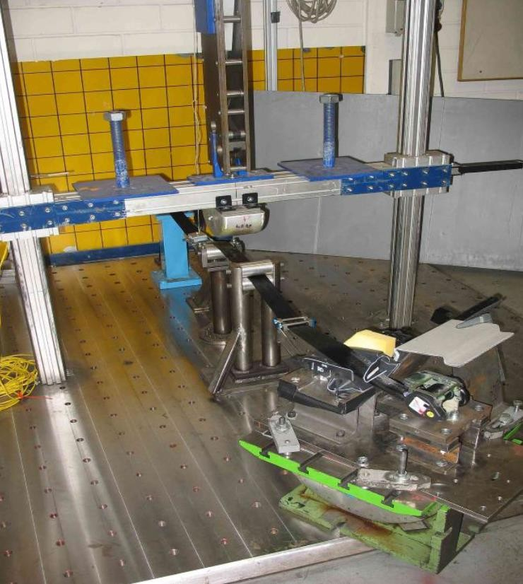
[redacted-person] statisch [redacted-person] dynamisch
[redacted-person]
DIN 75220
Sonnenlichtsimulation
EP [redacted-phone]
[redacted-person]
[A: BT-LAH-869]
Formel Q
Konzern-Richtlinien der [redacted-person]: Formel
Q-Konkret, -Neuteile integ- ral, -Fähigkeit
PV 1200
Klimawechseltest
PV 1303
Lichtechtheitsprüfung
PV 3341
[redacted-person] der Kfz-Innenausstattung; Bestimmung der
Emission organi- scher Verbindungen
PV 3900
Bauteile des Fahrzeuginnenraums, Geruchsprüfung
PV 3905
Kugelfallprüfung
PV 3925
Polymerwerkstoffe; Messung der Formaldehydemission
PV 3952
Schreibverhalten
PV 3974
Kratzverhalten
TL 1010
Schwerbrennbarkeit
VDA [redacted-phone]
Werkstoffklassifizierung im Kraftfahrzeugbau; Aufbau und
Nomenklatur
VDA [redacted-phone]
[redacted-person] für deklarationspflichtige Stoffe im Automobilbau
VDA 260
Bauteile von Kraftfahrzeugen - Kennzeichnung der Werkstoffe
[redacted]
Firmenzeichen, Teilekennzeichnung; Richtlinie für die Anwendung
[redacted]
Warenzeichen für Fahrzeugteile
[redacted]
Hersteller-Code für Fahrzeugteile
[redacted]
Herstellland-Kennzeichnung, Fahrzeugteile
[redacted]
Datumskennzeichnung, Fahrzeugteile
[redacted-co]13750
Oberflächenschutz für Metallteile; Schutzarten, Kurzzeichen
[redacted-co]50179
Bauteile des Fahrzeuginnenraumes; Emissionsverhalten
[redacted-co]50180
Bauteile des Fahrzeuginnenraumes; Emissionsverhalten
[redacted-co]50185
Freibewitterung
[redacted-co]50190
Fahrzeugbauteile; Farbe/ Glanz/ Oberfläche
[redacted-co]91100
[redacted-person]; Fahrzeugteile, Werkstoffe, Betriebsstoffe;
Zielsetzung, Festlegung
[redacted-co]91104
[redacted-person]; Grundlagen; [redacted-person],
Sachbilanz
[redacted-co]01067
Einsatz von Auto-ID zur eindeutigen Objektkennzeichnung
[redacted-co]01155
Fahrzeug-Zulieferteile; Genehmigung von Erstlieferung und
Änderung
[redacted-co]91102
[A: BT-LAH[redacted-ext]]
[A: BT-LAH[redacted-ext]]
[A: BT-LAH-780]
[redacted-person], Fahrzeugteile, Werkstoffe, Betriebsstoffe;
Recyclinganforderungen, Rezyklateinsatz
[redacted-co]99000
[A: BT-LAH-781]
[redacted-person] zur Leistungserbringung im Rahmen der
Bauteilentwicklung
[A: BT-LAH-782]
[redacted-co]99000-1
Teil 1: [redacted-person] zur Leistungserbringung im Rahmen
der Bauteilent- wicklung; Planungsfreigabe
[redacted-co]99000-2
[A: BT-LAH-783]
Teil 2: [redacted-person] zur Leistungserbringung im Rahmen
der Bauteilent- wicklung; Beschaffungsfreigabe
[redacted-co]99000-3
[A: BT-LAH-784]
Teil 3: [redacted-person] zur Leistungserbringung im Rahmen
der Bauteilent- wicklung; Konstruktionsfreigabe
[redacted-co]99000-4
[A: BT-LAH-785]
Teil 4: [redacted-person] zur Leistungserbringung im Rahmen
der Bauteilent- wicklung Baumustergenehmigung
Typprüfunterlagen,
Vorschriften, Gesetze
Aufgeführt sind hier nur die wichtigsten Typprüfungen, Vorschriften
und Gesetze. Selbstver- ständlich gelten auch alle anderen relevanten
weltweiten Anforderungen.
| Gesetznummer |
Geltungsbereich
|
| EG 77, ECE-R16 |
EG und ECE
|
[redacted-person] und Si Gurte
|
| FMVSS 208 und 209 |
USA
|
[redacted-person] und Si Gurte
|
| SR S 208 und 209 |
Canada
|
[redacted-person] und Si Gurte
|
| ADR 4 |
Australien
|
Gesetz Si Gurte
|
| EG 76, ECE-R 14 |
EG und ECE
|
[redacted-person] Si Gurte
|
| FMVSS 210 |
USA
|
[redacted-person] Si Gurte
|
| SR S 210 ( CMVSS ) |
Canada
|
[redacted-person] Si Gurte
|
| ADR 5 |
Australien
|
[redacted-person] Si Gurte
|
| FMVSS 225 |
USA
|
[redacted-person] |
| SR S 210.2 ( CMVSS ) |
Canada
|
[redacted-person] |
| ADR 34 |
Australien
|
[redacted-person] |
| EG 74/60, ECE-R21 |
EG und ECE
|
[redacted-person] und Kanten
|
| FMVSS 201 |
USA
|
[redacted-person] |
| SRS S 201 ( CMVSS ) |
Canada
|
[redacted-person] |
| FMVSS 302 |
USA
|
[redacted-person] |
| SR S 302 |
Canada
|
[redacted-person] |
| TL 1010 |
[redacted-person] |
| UL94 V-0 |
[redacted-person] von Bauteilen
|
| EU–Richtlinie [redacted-phone]EG |
EU – Richtlinie zur Altautoverordnung
|
Erfüllung der Kopfaufschlaganforderungen bei offenliegenden Teilen
ECE R21
> 35 mm
Querschnittslastenhefte
Lieferumfangslastenheft
projektspezifisches Lieferumfangslastenheft
Gurtanordnungslastenheft
projektspezifisches Gurtanordnungslastenheft
Lastenheft
projektspezifisches [redacted-person]
Frontrückhaltesystem
LAH DUM.857.BB
[redacted]
Lastenheft
projektspezifisches Gesamtfahrzeuglastenheft
LAH 5Q0.971
[redacted-person]-Anforderungen
Für [redacted-co] gilt:
LAH [redacted-phone]
Qualitätslastenheft
Für [redacted-co] gilt: LAH DUM 000 A TE DMU
Für [redacted-co] gilt: LAH DUM 000 TE CATIA V5
LAH.[redacted-phone]AF
[A: BT-LAH[redacted-ext]]
[A: BT-LAH[redacted-ext]]
[A: BT-LAH-938]
[A: BT-LAH-939]
[A: BT-LAH[redacted-ext]]
Anforderungsprofil für die Beauftragung von technischen Regeln zur
Aufnahme im System MBT
Zu beachtende
Schutzrechte und Lizenzen
[redacted-person]
Anhang 1: Prüfmatrix
siehe beigefügte Excel-Datei zur Prüfmatrix für die B-Freigabe und
Baumusterfreigabe der Gurtführung
[redacted-person] ist durch den jeweiligen Prüfer auszufüllen und dem
Auftraggeber vorzulegen. Zusätzlich sind weitere Dokumente
(Datenblätter, Werkstoffprüfberichte, etc.) der Matrix bei- zufügen.
[redacted-person] der erfolgten und bestandenen Prüfungen (aus diesem
Lastenheft / der Prüfmatrix) wird die Empfehlung zur B-Freigabe
und Baumusterfreigabe vom Lieferan- ten der Gurtführung und dem
Entwickler der Gurtanordnung abgegeben.
Anhang 2: Abwicklung von Baumusterfreigaben
bei Änderung des Fertigungsortes, von Werkzeugen, Bauteilen,
Werkstoffen usw. auf Wunsch eines Lieferanten
Alle geplanten Änderungen sind zu bündeln und zum Modelljahreswechsel
zum Einsatz zu bringen.
folgender Ablauf ist einzuhalten:
frühzeitige Meldung der geplanten Maßnahme an die Beschaffung,
Entwicklung und Qualitätssicherung zur Sicherstellung der
termingerechten Baumusterfreigabe unter Berücksichtigung der notwendigen
Prüfzeiträume und Durchführungsbestimmungen
Zuständigkeit: Lieferant der Gurtführung
gemeinsames Gespräch zwischen Beschaffung, Entwicklung,
Qualitätssicherung und Lieferant zur Abstimmung der erforderlichen
Aufwendungen und terminlichen Abar- beitungszeit
Zuständigkeit: [redacted]
Alle festgelegten Maßnahmen dürfen erst nach Genehmigung seitens
[redacted-co] umge- setzt werden.
Zuständigkeit: Lieferant der Gurtführung, [redacted-co]
Durchführungsbestimmungen:
[redacted-person] führt die festgelegten Prüfungen entsprechend
dieses Lastenheftes sowie der beigefügten Prüfmatrix durch.
[redacted-person] erstellt in deutscher Sprache einen kompletten
Prüfbericht über die ge- mäß diesem Lastenheft durchgeführten Versuche
und stellt die Versuchsergebnisse in schriftlicher und elektronischer
Form zur Verfügung.
[redacted-person] erstellt und übergibt einen Prüfbericht, eine
Fotodokumentation der ge- prüften Teile mit den Werkstoffangaben der
einzelnen Teile und Belegmuster an die Fachabteilung.
[redacted-person] sendet der Fachabteilung eine
Baumusterfreigabeempfehlung auf Ba- sis der Prüfergebnisse.
[redacted-person] erhält Teile für Stichprobenprüfungen.
[redacted-person] hat das Recht, bei Prüfungen anwesend zu
sein.
[redacted-person] erstellt ggf. einen Bericht zur Dokumentation
und erteilt die Bau- musterfreigabe.